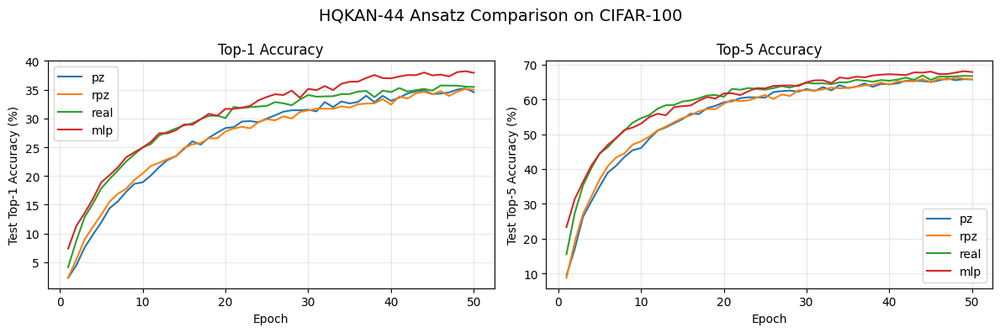
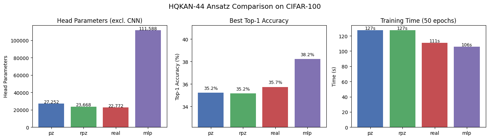

Ansatz Comparison: PZ vs RPZ vs Real
QKAN supports several quantum circuit ansatzes for its variational activation functions. Each ansatz defines a different circuit structure, affecting the parameter count, expressiveness, and training speed.
Ansatzes
Ansatz |
Circuit |
Params per layer |
Data encoding |
|---|---|---|---|
|
H -> [RZ(\u0`3b8₀) -> RY(:nbsphinx-math:u0`3b8₁) -> RZ(x)]^reps -> RZ(\u0`3b8) -> RY(:nbsphinx-math:u0`3b8) |
2 (RZ + RY) |
RZ |
|
H -> [RY(\u0`3b8) -> RZ(wx+b)]^reps -> RY(:nbsphinx-math:u0`3b8) |
2 (RY + RZ_encoded) |
RZ(encoded) |
|
H -> [X -> RY(:nbsphinx-math:`u0`3b8) -> Z -> RY(x)]^reps |
1 (RY only) |
RY |
Key trade-offs:
pz_encoding has the most variational parameters (2 per layer) and uses complex-valued gates
rpz_encoding (reduced pz) halves the variational parameters but always uses trainable data encoding (w:nbsphinx-math:`u0`0b7x + b)
real uses only real-valued gates (no complex arithmetic), which can be faster on hardware
We compare these ansatzes on CIFAR-100 using the HQKAN-44 architecture.
[1]:
import time
import numpy as np
import torch
import torch.nn as nn
import torch.nn.functional as F
import torch.optim as optim
import torchvision
import torchvision.transforms as transforms
from torch.utils.data import DataLoader
from tqdm import tqdm
from qkan import QKAN
device = torch.device("cuda" if torch.cuda.is_available() else "cpu")
print(f"Device: {device}")
Device: cuda
[2]:
class CNet(nn.Module):
def __init__(self, device):
super(CNet, self).__init__()
self.device = device
self.cnn1 = nn.Conv2d(3, 32, kernel_size=3, device=device)
self.relu = nn.ReLU()
self.maxpool1 = nn.MaxPool2d(kernel_size=2, stride=2)
self.cnn2 = nn.Conv2d(32, 64, kernel_size=3, device=device)
self.maxpool2 = nn.MaxPool2d(kernel_size=2, stride=2)
self.cnn3 = nn.Conv2d(64, 64, kernel_size=3, device=device)
self.maxpool3 = nn.MaxPool2d(kernel_size=2, stride=2)
def forward(self, x):
x = x.to(self.device)
x = self.relu(self.cnn1(x))
x = self.maxpool1(x)
x = self.relu(self.cnn2(x))
x = self.maxpool2(x)
x = self.relu(self.cnn3(x))
x = self.maxpool3(x)
return x.flatten(start_dim=1)
[3]:
transform = transforms.Compose(
[transforms.ToTensor(), transforms.Normalize((0.5,), (0.5,))]
)
trainset = torchvision.datasets.CIFAR100(
root="./data", train=True, download=True, transform=transform
)
testset = torchvision.datasets.CIFAR100(
root="./data", train=False, download=True, transform=transform
)
trainloader = DataLoader(trainset, batch_size=1000, shuffle=True)
testloader = DataLoader(testset, batch_size=1000, shuffle=False)
[4]:
in_feat = 2 * 2 * 64 # 256 (CNet output)
out_feat = 100
in_resize = int(np.ceil(np.log2(in_feat))) * 4 # 32
out_resize = int(np.ceil(np.log2(out_feat))) * 4 # 28
N_EPOCHS = 50
criterion = nn.CrossEntropyLoss()
cnn_param = sum(p.numel() for p in CNet("cpu").parameters())
print(f"CNN backbone params: {cnn_param}")
print(f"HQKAN-44 shape: QKAN([{in_resize}, {out_resize}])")
def train_and_eval(model, label):
"""Train for N_EPOCHS and return results dict."""
optimizer = optim.Adam(model.parameters(), lr=1e-3)
best_top1, best_top5 = 0, 0
test_accs, test_top5_accs = [], []
t0 = time.time()
for epoch in range(N_EPOCHS):
model.train()
with tqdm(trainloader, desc=f"{label} ep{epoch+1}", leave=False) as pbar:
for images, labels in pbar:
optimizer.zero_grad()
output = model(images)
loss = criterion(output, labels.to(device))
loss.backward()
optimizer.step()
acc = (output.argmax(1) == labels.to(device)).float().mean()
pbar.set_postfix(loss=f"{loss.item():.3f}", acc=f"{acc.item():.3f}")
model.eval()
t_loss = t_acc = t_top5 = 0
with torch.no_grad():
for images, labels in testloader:
output = model(images)
t_loss += criterion(output, labels.to(device)).item()
t_acc += (output.argmax(1) == labels.to(device)).float().mean().item()
t_top5 += (
(output.topk(5, 1).indices == labels.to(device).unsqueeze(1))
.any(1)
.float()
.mean()
.item()
)
t_loss /= len(testloader)
t_acc /= len(testloader)
t_top5 /= len(testloader)
test_accs.append(t_acc)
test_top5_accs.append(t_top5)
if (epoch + 1) % 10 == 0:
print(
f" [{label}] Epoch {epoch+1}: "
f"loss={t_loss:.3f} top1={t_acc:.1%} top5={t_top5:.1%}"
)
elapsed = time.time() - t0
n_params = sum(p.numel() for p in model.parameters())
head_params = n_params - cnn_param
return {
"label": label,
"n_params": n_params,
"head_params": head_params,
"top1": max(test_accs),
"top5": max(test_top5_accs),
"time_s": elapsed,
"test_accs": test_accs,
"test_top5_accs": test_top5_accs,
}
CNN backbone params: 56320
HQKAN-44 shape: QKAN([32, 28])
PZ Encoding
The default ansatz. Each repetition applies RZ(θ₀) → RY(θ₁) → RZ(x), giving 2 variational parameters per layer.
[5]:
torch.manual_seed(42)
model_pz = nn.Sequential(
CNet(device=device),
nn.Linear(in_feat, in_resize, device=device),
QKAN([in_resize, out_resize], device=device, ansatz="pz_encoding", ba_trainable=True),
nn.Linear(out_resize, out_feat, device=device),
)
results_pz = train_and_eval(model_pz, "pz")
del model_pz
torch.cuda.empty_cache()
[pz] Epoch 10: loss=3.335 top1=19.1% top5=47.0%
[pz] Epoch 20: loss=2.875 top1=27.8% top5=58.9%
[pz] Epoch 30: loss=2.691 top1=31.5% top5=62.9%
[pz] Epoch 40: loss=2.608 top1=34.0% top5=64.5%
[pz] Epoch 50: loss=2.576 top1=35.4% top5=65.8%
RPZ Encoding (Reduced PZ)
Uses only RY(θ) per layer (no RZ(θ)), halving the variational parameters. Data is encoded via a trainable linear transform: RZ(w·x + b).
[ ]:
torch.manual_seed(42)
model_rpz = nn.Sequential(
CNet(device=device),
nn.Linear(in_feat, in_resize, device=device),
QKAN([in_resize, out_resize], device=device, ansatz="rpz_encoding"),
nn.Linear(out_resize, out_feat, device=device),
)
results_rpz = train_and_eval(model_rpz, "rpz")
del model_rpz
torch.cuda.empty_cache()
rpz ep3: 66%|██████▌ | 33/50 [00:01<00:00, 22.97it/s, acc=0.116, loss=3.845]
Real Encoding
Uses only real-valued gates (X, RY, Z) — no complex arithmetic. Data is encoded via RY(x). 1 variational parameter per layer.
[ ]:
torch.manual_seed(42)
model_real = nn.Sequential(
CNet(device=device),
nn.Linear(in_feat, in_resize, device=device),
QKAN([in_resize, out_resize], device=device, ansatz="real", ba_trainable=True),
nn.Linear(out_resize, out_feat, device=device),
)
results_real = train_and_eval(model_real, "real")
del model_real
torch.cuda.empty_cache()
[real] Epoch 10: loss=3.039 top1=25.0% top5=54.6%
[real] Epoch 20: loss=2.771 top1=30.1% top5=60.8%
[real] Epoch 30: loss=2.616 top1=34.1% top5=64.8%
[real] Epoch 40: loss=2.590 top1=34.6% top5=65.4%
[real] Epoch 50: loss=2.552 top1=35.5% top5=66.7%
MLP Baseline
Classical 3-layer MLP for comparison.
[ ]:
class CNN_MLP(nn.Module):
def __init__(self, device):
super().__init__()
self.cnet = CNet(device)
self.fc1 = nn.Linear(256, 192).to(device)
self.fc2 = nn.Linear(192, 128).to(device)
self.fc3 = nn.Linear(128, 100).to(device)
def forward(self, x):
x = self.cnet(x)
x = F.relu(self.fc1(x))
x = F.relu(self.fc2(x))
return self.fc3(x)
torch.manual_seed(42)
model_mlp = CNN_MLP(device=device)
results_mlp = train_and_eval(model_mlp, "mlp")
del model_mlp
torch.cuda.empty_cache()
[mlp] Epoch 10: loss=3.083 top1=24.9% top5=53.0%
[mlp] Epoch 20: loss=2.747 top1=31.7% top5=61.7%
[mlp] Epoch 30: loss=2.600 top1=35.2% top5=65.0%
[mlp] Epoch 40: loss=2.528 top1=37.0% top5=67.3%
[mlp] Epoch 50: loss=2.511 top1=37.9% top5=67.9%
Results
[ ]:
import matplotlib.pyplot as plt
all_results = [results_pz, results_rpz, results_real, results_mlp]
print(f"{'Model':<8} {'Params':>8} {'Head':>8} {'Top-1':>8} {'Top-5':>8} {'Time':>8}")
print("-" * 52)
for r in all_results:
print(
f"{r['label']:<8} {r['n_params']:>8,} {r['head_params']:>8,} "
f"{r['top1']:>7.1%} {r['top5']:>7.1%} {r['time_s']:>7.1f}s"
)
Model Params Head Top-1 Top-5 Time
----------------------------------------------------
pz 83,572 27,252 35.2% 66.0% 127.2s
rpz 79,988 23,668 35.2% 66.2% 127.4s
real 79,092 22,772 35.7% 66.9% 110.7s
mlp 167,908 111,588 38.2% 68.1% 105.8s
[ ]:
fig, axes = plt.subplots(1, 2, figsize=(12, 4))
for r in all_results:
axes[0].plot(range(1, N_EPOCHS + 1), [a * 100 for a in r["test_accs"]], label=r["label"])
axes[1].plot(range(1, N_EPOCHS + 1), [a * 100 for a in r["test_top5_accs"]], label=r["label"])
axes[0].set_xlabel("Epoch")
axes[0].set_ylabel("Test Top-1 Accuracy (%)")
axes[0].set_title("Top-1 Accuracy")
axes[0].legend()
axes[0].grid(True, alpha=0.3)
axes[1].set_xlabel("Epoch")
axes[1].set_ylabel("Test Top-5 Accuracy (%)")
axes[1].set_title("Top-5 Accuracy")
axes[1].legend()
axes[1].grid(True, alpha=0.3)
fig.suptitle("HQKAN-44 Ansatz Comparison on CIFAR-100", fontsize=14)
plt.tight_layout()
plt.show()

[ ]:
fig, axes = plt.subplots(1, 3, figsize=(14, 4))
labels = [r["label"] for r in all_results]
colors = ["#4C72B0", "#55A868", "#C44E52", "#8172B2"]
# Parameter count (head only)
heads = [r["head_params"] for r in all_results]
axes[0].bar(labels, heads, color=colors)
axes[0].set_ylabel("Head Parameters")
axes[0].set_title("Head Parameters (excl. CNN)")
for i, v in enumerate(heads):
axes[0].text(i, v + 500, f"{v:,}", ha="center", fontsize=9)
# Top-1 accuracy
top1s = [r["top1"] * 100 for r in all_results]
axes[1].bar(labels, top1s, color=colors)
axes[1].set_ylabel("Top-1 Accuracy (%)")
axes[1].set_title("Best Top-1 Accuracy")
axes[1].set_ylim(min(top1s) - 3, max(top1s) + 3)
for i, v in enumerate(top1s):
axes[1].text(i, v + 0.3, f"{v:.1f}%", ha="center", fontsize=9)
# Training time
times = [r["time_s"] for r in all_results]
axes[2].bar(labels, times, color=colors)
axes[2].set_ylabel("Time (s)")
axes[2].set_title(f"Training Time ({N_EPOCHS} epochs)")
for i, v in enumerate(times):
axes[2].text(i, v + 1, f"{v:.0f}s", ha="center", fontsize=9)
fig.suptitle("HQKAN-44 Ansatz Comparison on CIFAR-100", fontsize=14)
plt.tight_layout()
plt.show()

Conclusion
All three QKAN ansatzes achieve comparable accuracy to the MLP baseline while using significantly fewer parameters:
pz_encoding provides the most expressive circuit with 2 variational parameters per layer, but at higher computational cost due to complex arithmetic
rpz_encoding halves the variational parameters while maintaining accuracy through trainable data encoding
real avoids complex arithmetic entirely, offering the fastest training with competitive accuracy
All QKAN variants use roughly 4-5x fewer head parameters than the MLP baseline while achieving similar performance.